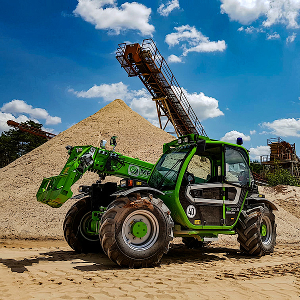
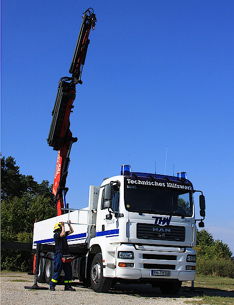

Wir können helfen.
Unterstützen Sie das Technische Hilfswerk Roth mit Ihrer Spende oder Mitgliedschaft – damit wir auch in Zukunft effektiv helfen können.
Jetzt unterstützenÜber uns
Die Vereinigung der Helfer und Förderer des Technischen Hilfswerks (THW) Roth e.V. wurde im Jahr 1985 gegründet. Seitdem unterstützt sie den THW-Ortsverband Roth insbesondere bei der Beschaffung zusätzlicher Ausstattung und Geräte.
Die Grundausstattung der Einsatzgruppen mit Standardgeräten wird im Rahmen der gesetzlichen Aufgaben vom Bund bereitgestellt. Allerdings zeigen die Erfahrungen aus zahlreichen Einsätzen immer wieder, dass eine weitergehende – und oft effektivere – Ausstattung sinnvoll ist. Für solche ergänzenden oder verbesserten Anschaffungen werden die Kosten in der Regel nicht vom Bund übernommen.
An dieser Stelle wird die Helfervereinigung aktiv: Sie übernimmt die Finanzierung notwendiger Ergänzungen und ermöglicht so die Umsetzung wichtiger Ausstattungsmaßnahmen. Die hierfür benötigten Mittel generiert der Verein durch Mitgliedsbeiträge, Spenden sowie durch verschiedene Aktivitäten innerhalb der Helferschaft.
Seit 1985 beschafft
- Funkgeräte
- Beleuchtungsmittel
- Funkmeldeempfänger
- Rettungsspreizer mit Schlauchtrommel
- Kriechgang zur Übung für Atemschutzträger
- Einsatzleitwagen Audi
- Garagenneubau
- MAN-LKW mit Ladekran
- Merlo Teleskoplader
Unsere Fahrzeuge
Durch die Unterstützung unserer Mitglieder und Spender konnten unter anderem folgende Fahrzeuge für den THW-Ortsverband Roth beschafft werden.

Mitglied werden
Unterstützen auch Sie unser THW mit Ihrer Mitgliedschaft in der Helfervereinigung. Der Jahresbeitrag beträgt nur 15,00 €.
Alternativ können Sie uns auch mit einer einmaligen Spende unterstützen. Selbstverständlich sind wir als förderungswürdiger Verein anerkannt und können Spendenbescheinigungen ausstellen.
Ihre Vorteile
- Sie unterstützen den THW-Ortsverband Roth direkt vor Ort
- Ihr Beitrag fließt vollständig in Ausstattung und Geräte
- Steuerlich absetzbar – Spendenbescheinigung auf Wunsch
- Einladung zu Veranstaltungen des Ortsverbands
Spendenkonto
Sparkasse Mittelfranken-Süd
IBAN: DE48 7645 0000 0000 0959 92
Verwendungszweck: Spende THW Roth
Kontakt
Vereinigung der Helfer und Förderer des Technischen Hilfswerks (THW) Roth e.V.
c/o Karl Goller
Gildestr. 11
91154 Roth
Tel: 09171/4734
Fax: 09171/2761
E-Mail: info@thw-roth.de
Webseite THW Roth: www.thw-roth.de